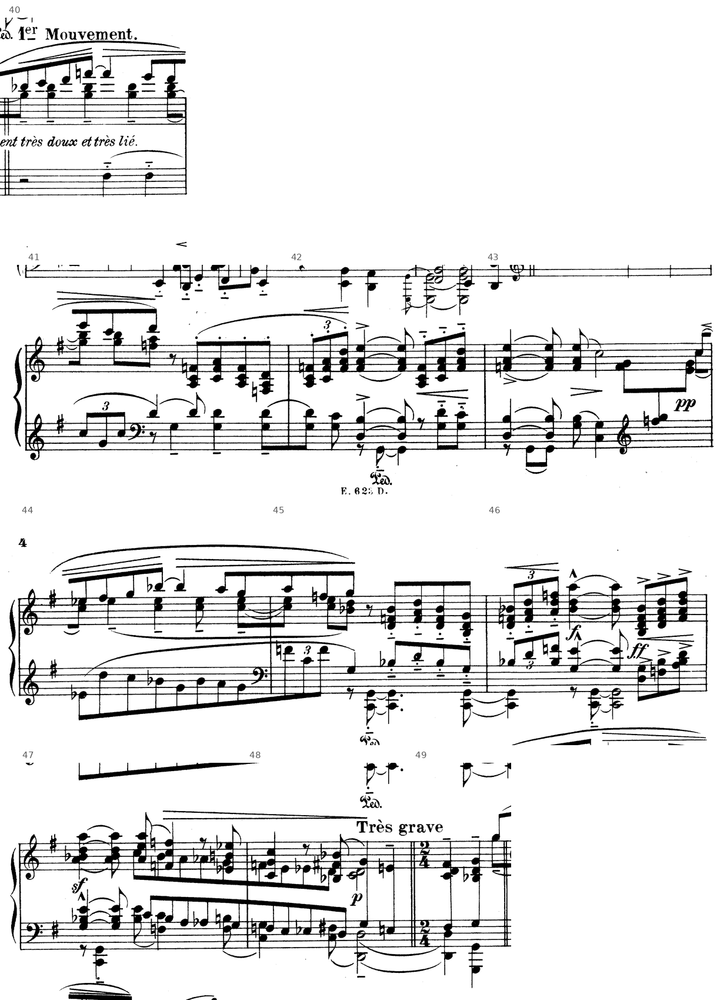
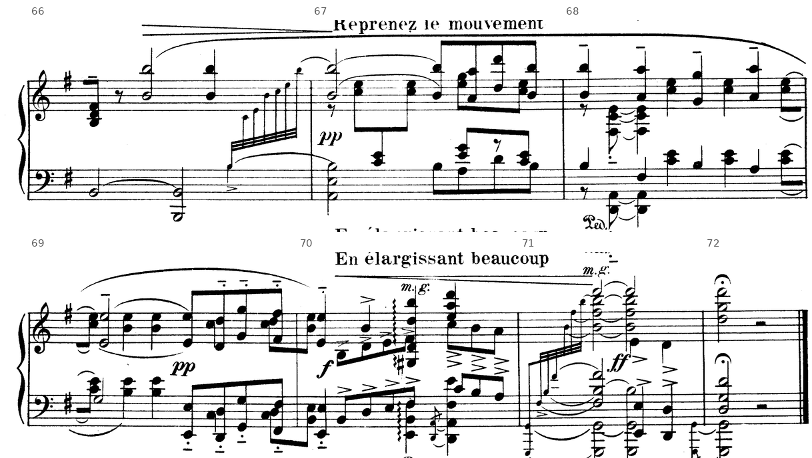

Un ritornello che non cambia mai, due episodi, una cadenza negata due volte e concessa alla fine. La prima analisi integrale dell’anno, nella forma della prova scritta.
…per la grande evidenza della melodia, per le formule costanti nell’accompagnamento…
G. Salvetti, La nascita del Novecento, p. 70, sugli arcaismi del primo Ravel
CLa seconda prova dell’Esame di Stato, p. 270; prove di tipo A, pp. 272 sgg.
Sezione B, unità 1, lezioni B1–B2, pp. 188–193: il rondò e la sua architettura, che serviranno al terzo piano.
Il DM 769 del 26 novembre 2018 descrive la prova di tipo A come l’analisi di una composizione, o di una sua parte significativa, tratta preferibilmente dalla letteratura del Novecento, con la relativa contestualizzazione storico-culturale; la prima parte della prova dura al massimo sei ore. Il testo richiesto descrive, in partitura e all’ascolto, tecniche compositive, caratteristiche formali e stilistiche, elementi strutturali e funzioni, e argomenta le proprie conclusioni.
1. Ogni affermazione porta la sua battuta, e chi corregge deve poterla verificare in pochi secondi.
2. Gli accordi si nominano con le note, dal basso, quando la lettura conta: un’etichetta senza note non si verifica.
3. Prima il dato, poi la sua interpretazione; dove la partitura ammette due letture, si espongono entrambe con i loro argomenti.
4. Le indicazioni dell’autore si citano tra virgolette, in francese, come sono stampate.
5. Il quarto piano usa fatti certi e fonti citate, e spiega i dati dei primi tre.
In un’ora si compila la scheda dei quattro piani, che dell’analisi scritta è l’ossatura; il testo continuo si scrive a casa.
1. Prima dell’ascolto, numerare le battute della partitura (edizione Demets): sono 72, e le tre battute in 2/4 contano come battute.
2. Durante l’ascolto, segnare con una parentesi le battute in cui ritorna la melodia d’apertura, e con una linea ondulata quelle in cui il basso tiene la stessa nota per più battute.
Piano 1 · I parametri. Le alterazioni delle bb. 1–12 (quale è la prima, e dove). Le fondamentali sui tempi forti delle bb. 2–6, in successione: che relazione c’è fra l’una e l’altra? L’accordo del quarto tempo della b. 11, nota per nota dal basso, e l’accordo della b. 12. Le alterazioni che compaiono dalla b. 40, e da quale battuta ciascuna.
Piano 2 · Il materiale. La prima battuta del tema confrontata con le bb. 28 e 60: che cosa resta identico, che cosa cambia nella voce interna e nel basso.
Piano 3 · La forma. Lo schema in lettere, con le battute di inizio e di fine e il numero di battute di ogni sezione; come si chiude ciascuna sezione.
Piano 4 · Lo stile e la storia. Che cosa era la pavana; quali tratti della danza restano nella partitura, con la battuta.
Le risposte si correggono piano per piano nelle slide seguenti, con i passi trascritti e le tavole; la scheda corretta è la traccia del testo da scrivere a casa.
Le bb. 1–10 usano soltanto i sette suoni di sol maggiore; la prima alterazione è il sol♯ della b. 11. Dentro questa diatonia l’armonia procede per accordi di quattro e cinque suoni, con un ritmo armonico di una o due funzioni per tempo.
La b. 1 si apre senza basso: sul primo tempo suonano soltanto il sol4 della melodia e la voce interna si3–re4, e il sol2 entra sul secondo tempo a confermare il I grado. Sul terzo tempo il basso scende al do2 e la voce interna diventa si3–mi4: do–mi–sol–si è una settima di quarta specie sul IV grado, che non prepara né risolve la settima e la tratta come colore. Il la4 della melodia, preso per grado e lasciato per salto di terza, è una nota di sfuggita; il fa♯4 del quarto tempo, sopra il mi3 del basso, è un’appoggiatura che risolve sul mi4 nella croma seguente, sul VI grado. Alla b. 2 il re2 sostiene fa♯3–si3 e il re4 della melodia, cioè il III grado in primo rivolto, che il si2 del secondo tempo porta allo stato fondamentale. Sul terzo tempo (mi2, sol3–si3) il fa♯4, già suonato alla fine del tempo precedente e ribattuto sul tempo forte, risolve sul mi4: un ritardo 9–8 articolato. Il quarto tempo (re3, sol3–si3, mi4) è una settima di seconda specie sul VI grado in terzo rivolto.
La b. 3 ripete il profilo della b. 1 su un’altra armonia. Il do4–mi4 della voce interna, il si4 legato della melodia e il sol3 che il basso tocca sul secondo tempo formano di nuovo la settima do–mi–sol–si, ora in secondo rivolto; sul terzo tempo il la2 del basso trasforma il si4 tenuto in una nona, che sale al do5 nella croma successiva. Butterworth sigla questo punto come accordo di nona sul II grado (ii9); con eguale fondamento lo si descrive come ritardo ascendente 9–10 sopra la triade la–do–mi. Alla b. 4 arriva la dominante, una settima senza quinta (re3, do4–re4, fa♯4); il basso salta poi al do4, cioè sulla settima, e l’accordo diventa un V7 in terzo rivolto, con il sol4 della melodia come nota di passaggio fra fa♯4 e la4. Sul terzo tempo il sol2 riporta il I grado, la voce interna risolve la settima (do4–si3) e il la4 legato sale al si4 con un secondo ritardo ascendente. La b. 5 è la stessa battuta un grado sotto: IV7 sul do3, IV7 in terzo rivolto sul si3, VII grado sul fa♯2 con il sol4 legato che sale al la4, II grado con il mi3 al basso. Le bb. 4–5 sono un modello e la sua progressione discendente, con le stesse note estranee nelle stesse posizioni.
La b. 6 ferma il moto. Sul si2 la voce interna arpeggia fa♯3–si3–re4 sotto il fa♯4 tenuto della melodia, il III grado allo stato fondamentale. Nella seconda metà, cédez, la destra scende per tre accordi di crome sopra il basso fa♯2–sol2–la2: do4–mi4–la4 sopra il fa♯ è la settima di terza specie (semidiminuita) sul VII grado; si3–re4–fa♯4 sopra il sol è una settima di quarta specie sul I; fa♯3–do4–mi4 sopra il la si legge come II grado con sesta aggiunta o come lo stesso VII in primo rivolto. La b. 7 torna al III grado (re3 sotto fa♯4–si3–re4, poi il bicordo si1–re3 sotto il si4), e un arpeggio in biscrome lancia la seconda frase.
Isolando le fondamentali dei tempi forti, dalla b. 2 alla b. 6 il basso percorre l’intero circolo diatonico delle quinte: si (b. 2, secondo tempo), mi (b. 2, terzo), la (b. 3, terzo), re (b. 4, primo), sol (b. 4, terzo), do (b. 5, primo), fa♯ (b. 5, terzo) e di nuovo si (b. 6). Butterworth porta proprio l’inizio della Pavane, con le sigle «iiib – vi – ii9», come esempio di progressione per quinte elaborata nella melodia e nell’armonia, nella quale tuttavia la successione di accordi sottostante resta chiara. Ne deriva l’immobilità del ritornello: la frase attraversa la tonica una volta sola (b. 4), come anello di una catena.
La seconda frase lavora sulla regione della dominante. La semibreve la1 della b. 8 sostiene mi4–sol4, poi do4–mi4–sol4, sotto il si4 della melodia: un accordo di nona sul II grado completo (la–do–mi–sol–si). La sinistra raddoppia intanto il tema all’ottava inferiore (si3–la3–re4–si3 sotto si4–la4–re5–si4). Alla b. 9 la sinistra tiene per tutta la battuta la quinta vuota re2–la2, un pedale di dominante, sopra il quale si succedono la nona di dominante (re–fa♯–la–do–mi, con il si4 della melodia come appoggiatura della quinta), un’undicesima senza terza che aggiunge al re–la il do, il mi, il sol e il si, e di nuovo la nona. Tymoczko cita le bb. 67–68 come esempio di predominante «estesa» con la fondamentale al basso (A Geometry of Music, p. 356, fig. 10.1.6e); nella numerazione adottata qui la b. 67 è la ripresa della b. 8. La b. 10 apre il VI grado in primo rivolto (sol3 sotto il mi4 della melodia); nella seconda metà, un peu retenu e pp, la sinistra scende per ottave mi–re–sol–fa♯, la voce inferiore della destra la raddoppia un’ottava sopra e sui contrattempi resta fisso il bicordo do5–re5: sopra i quattro bassi si leggono IV in primo rivolto con nona, V7, I con quarta sospesa, V in primo rivolto.
La b. 11 è il culmine (En élargissant, f). Sul primo tempo mi2–mi3, si3 e mi4–si4–mi5 suonano il VI grado senza terza, in sole quinte e ottave. Sul terzo tempo compare il sol♯: mi2–si2–sol♯3 con re4–fa♯4 è la nona di dominante del II grado (V9/ii); sul quarto, re2–la2–fa♯3 con do4 e mi4 è la nona di dominante di sol. I due accordi hanno la stessa disposizione e scendono in blocco di un tono: Stein illustra con un esempio dalla Pavane il parallel chord movement, nel quale l’accordo è trattato come un’unità e spostato in blocco (Structure & Style, p. 213, es. 195), e nella partitura il caso più evidente è questo. La nona di dominante, attesa sulla tonica, prosegue invece alla b. 12 sull’accordo si1–fa♯2–re3–fa♯3 / si3–fa♯4: la settima do4 scende al si3 attraverso la terzina do4–si3–la3 e il basso cala di terza, da re a si. È una cadenza d’inganno, con il III grado al posto del I; nella seconda metà della battuta l’accordo di si minore sale per crome staccate dalla sinistra alla destra (fa♯3–si3, si3–re4, re4–fa♯4, fa♯4–si4) e riconduce al 1er Mouvement.
Confrontare il quarto tempo delle bb. 11, 38 e 70 e l’accordo che segue ciascuno (bb. 12, 39, 71). Che cosa distingue l’ultima ripresa dalle prime due?
Al quarto tempo della b. 11 il basso re2–la2 sostiene fa♯3, do4 e mi4: è la nona di dominante completa (re–fa♯–la–do–mi), preceduta dalla nona di dominante del II grado sul mi (mi–sol♯–si–re–fa♯), che ha la stessa disposizione e scende in blocco di un tono, un caso esemplare di quel moto parallelo di accordi trattati come unità che Stein illustra proprio con la Pavane (p. 213). Alla b. 12 la nona non va al sol: la settima do4 scende al si3 attraverso la terzina do–si–la, il basso cala di terza al si1, e l’accordo è si–re–fa♯, il III grado. È una cadenza d’inganno V9–iii, e alla b. 39 si ripete identica («Large», ff). Solo alla b. 70 («En élargissant beaucoup») la stessa nona risolve sulla tonica, e alla b. 71 l’accordo di sol maggiore arriva ff dopo un arpeggio che parte dal sol1. La forma intera si regge su una cadenza perfetta rinviata fino all’ultima ripresa.
L’accordo finale della b. 72 (sol1–sol2–re3–sol3–re4 / re5–sol5–re6) toglie la terza: la terza si è appena sentita alla b. 71, e l’ultimo accordo ne è una riduzione timbrica, in fondamentali e quinte, non una sospensione del modo.
Il tema procede quasi sempre per grado congiunto e nella prima frase resta entro una settima, dal re4 (b. 2) al do5 (b. 3). La cellula ritmica è costante: un valore lungo (minima legata a croma, oppure semiminima) seguito da tre o quattro crome. La b. 3 ripete la b. 1 una terza sopra, nota per nota (sol–la–fa♯–mi diventa si–do–la–sol); la b. 4 risponde alla b. 2 alla stessa distanza e ne allarga il profilo fino al si4; la b. 5 riprende la b. 4 un grado sotto. La prima frase misura sette battute: due semifrasi di due battute (bb. 1–2 e 3–4, la seconda alla terza superiore), una battuta di progressione (b. 5) e una chiusa di due (bb. 6–7), nella quale la minima fa♯4 e gli accordi cédez fanno da cesura. Manca una struttura di antecedente e conseguente: la frase cresce per ripetizione trasposta, e la sua estensione nasce dalla progressione. La seconda frase (bb. 8–12) dura cinque battute, sale al re5 (b. 8) e al mi5 (b. 11) e ridiscende al fa♯4 della b. 12. Il ritornello somma così 7 + 5 battute, una misura asimmetrica che ogni ripresa conserva.
Il metro è C, con la semiminima a 80 e l’indicazione Assez doux, mais d’une sonorité large. Il passo della pavana sta nel basso, in crome staccate seguite da pause, una per tempo, con il primo tempo spesso vuoto (bb. 1 e 3) e l’appoggio spostato sul secondo. Le indicazioni agogiche cadono sui confini delle frasi, cédez (b. 6), En mesure (b. 8), un peu retenu (b. 10), En élargissant (b. 11), 1er Mouvement (b. 12): ogni fine di frase si allarga e il tempo viene ripreso subito dopo. Le battute in 2/4 (bb. 19, 49, 59) accorciano di due tempi la chiusa delle parti degli episodi; le corone (bb. 27, 59, 72) precedono i ritorni e chiudono il brano.
Nel ritornello iniziale la scrittura ha tre strati. La destra porta la melodia con i gambi in su e la voce interna in crome con i gambi in giù, in disposizione stretta, nel registro centrale (si3–do5); la sinistra suona un basso in disposizione lata, esteso dal do2 (b. 1) al do4 (b. 4), che lascia vuoto lo spazio fra le mani. Il pedale non è indicato. Alla b. 8 la sinistra raddoppia all’ottava inferiore la melodia, e alla b. 10 la discesa del basso suona in tre ottave contemporanee. La dinamica resta a lungo fra p e pp (p alla b. 1, pp alla b. 13, ppp alla b. 20) e sale a pochi culmini, tutti alla chiusa di una frase o di un periodo: f alla b. 11, ff alla b. 38, f e ff alla b. 46, sf alla b. 47, sf e ff alla b. 56, sf alla b. 57, f alla b. 70, ff alla b. 71.
Il primo episodio nasce da un solo disegno, un’oscillazione di accordi ribattuti sopra un pedale (Très lointain, pp, Ped.). Alla b. 13 la destra alterna la4–si4–re5–fa♯5 e sol4–si4–re5, cioè il III grado con settima e il I in primo rivolto sopra il si del basso: i due accordi hanno in comune si e re, e le altre voci si muovono per grado (la–sol, fa♯–sol), come accordi di volta. La b. 14 passa a mi–sol–si–re e poi a mi–sol–si con il do♯5 della melodia tenuto per tre tempi: sul pedale di si il do♯ suona come sesta maggiore del mi minore, un colore dorico. La b. 15 è la b. 13 trasportata una terza sotto, e la b. 16 pone sul pedale do♯4–mi4–sol4–si4, la raccolta di suoni della b. 14 ordinata dal do♯, cioè una settima semidiminuita; nella seconda metà il mi scende al re (do♯4–re4–fa♯4, sotto il fa♯4 tenuto della melodia). Alla b. 17, sopra il la1, la destra alterna re–fa♯–la–do♯, accordo di settima maggiore sul V grado in secondo rivolto, e si–re–fa♯: il do♯, sensibile di re, orienta per un momento l’armonia verso la regione della dominante.
Il primo episodio cambia registro e meccanica rispetto al ritornello. La destra ribatte accordi di quattro suoni in crome, in disposizione stretta, con i punti sotto legatura (un portato); la sinistra tiene ottave gravi (si1–si2) sotto il segno Ped. e alla fine delle bb. 13–14 incrocia la destra (m.g.) per prendere una nota dell’accordo.
Alla b. 18 (très soutenu, mf) la sinistra abbandona il pedale e procede per quinte vuote parallele, mi2–si2, la2–mi3, re3–la3, la2–mi3, mi2–si2, un moto che la grammatica scolastica vieta e che qui produce un colore arcaico, da organum; sopra di esse la destra procede per accordi di tre suoni in disposizione stretta (sol3–re4–fa♯4, sol3–si3–mi4, fa♯3–la3–re4, fa♯3–si3–mi4, sol3–re4–fa♯4), e sul re–la il terzo è la triade di dominante, mentre sul mi–si il primo e l’ultimo formano mi–sol–si–re–fa♯, nona del VI grado. La b. 19, in 2/4, chiude con un II senza terza (la–mi sotto sol3–si3–mi4) e un V (re–la sotto fa♯3–la3–re4): una cadenza sospesa.
Nella seconda metà dell’episodio (bb. 20–24, ppp) la destra ripete le bb. 13–17, ma il basso scende per quinte: si (b. 20), mi (b. 21), la (b. 22), la e re (b. 23), sol (b. 24). Gli stessi accordi cambiano funzione. Il mi–sol–si–re con il do♯, che sopra il si della b. 14 suonava come armonia di passaggio, sopra il mi della b. 21 diventa un VI grado con settima e sesta dorica; il fa♯–sol–si–re della b. 15, sopra il la della b. 22, si legge come undicesima del II grado. Dalla b. 25 la ripetizione si incrina: gli accordi ricevono alterazioni cromatiche, la dinamica sale al f, un peu plus lent allarga il tempo e gli accordi accentati della b. 27 approdano per gradi cromatici a re2–la2 / fa♯3–la3–do4–re4, la settima di dominante coronata che risolve soltanto sul sol della b. 28, cioè con la ripresa del tema.
In A′ (b. 28) e in A″ (b. 60) la melodia torna con le stesse altezze e lo stesso ritmo, un’ottava sopra: sol5 legato, la5, fa♯5, mi5. Il confronto nota per nota della prima battuta mostra tre accompagnamenti diversi. Alla b. 1 la voce interna alterna si3–re4 nei primi due tempi e si3–mi4 negli altri due, e il basso suona sol2, do2 e mi3 in crome staccate sul secondo, terzo e quarto tempo. Alla b. 28 la voce interna sale di un’ottava (si4–re5, poi si4–mi5) e ogni si4 riceve sotto di sé una nota dell’accordo (re4, poi mi4); la sinistra suona sul primo tempo l’arpeggiato sol2–re3–si3 e sul terzo l’arpeggiato do2–sol2–mi3, con un Ped. per ogni metà della battuta, e nei tempi deboli il bicordo si3–sol4. Il basso, che alla b. 1 taceva sul primo tempo, ora lo accentua, e il mi3 che alla b. 1 dava un VI grado al quarto tempo diventa la nota superiore dell’arpeggiato del terzo: il ritmo armonico passa da tre funzioni (I, IV7, VI) a due (I, IV7). Alla b. 60 (marquez le chant) la sinistra è identica a quella della b. 28, mentre la voce interna si muove in semicrome, re4–si4–re5–si4 e poi mi4–si4–mi5–si4, con gli stessi suoni della b. 28 resi in figurazione.
Il confronto vale per tutta la prima frase, e alle bb. 31–33 rivela una variante armonica che la melodia invariata nasconde. Le bb. 28–30 conservano le funzioni delle bb. 1–3. Dove la b. 4 portava la settima di dominante sul re3, la b. 31 arpeggia si2–fa♯3–re4, il III grado, e la sinistra, passata in chiave di violino, completa il tempo con re4–fa♯4–si4; dove la b. 5 portava la settima di quarta specie sul do3, la b. 32 arpeggia la2–mi3–do4, il II grado, con do4–mi4–la4 nel secondo tempo. I terzi tempi restano quelli di A (sol2–re3–si3 alla b. 31, fa♯2–do3–la3 alla b. 32), sicché la coppia di quinte re–sol, do–fa♯ diventa una coppia di terze discendenti si–sol, la–fa♯: III e II prendono il posto di V e IV, gradi con i quali hanno due suoni in comune. Anche la chiusa cambia basso: alla b. 33 il quarto tempo poggia su si2 e re3 invece che su sol2 e la2, e l’ultimo accordo cédez (fa♯3–do4–mi4), sopra il re3, diventa una nona di dominante senza quinta. A″ riprende la sinistra di A′ nota per nota (bb. 60–66) e spezza in semicrome anche gli accordi cédez (b. 65).
A ogni ripresa l’accompagnamento si infittisce e accelera (crome, crome raddoppiate con accordi arpeggiati, semicrome), mentre la successione armonica si semplifica. Schönberg elenca come varianti possibili della ripresa, nella scrittura pianistica, «gli ornamenti della melodia, gli spostamenti d’ottava, la suddivisione dell’accompagnamento e l’arricchimento dei disegni» (Elementi di composizione musicale, p. 200): la Pavane usa gli ultimi tre e rinuncia al primo. Anche le indicazioni tornano nello stesso punto della frase: cédez e mf alle bb. 6 e 33, l’arpeggio rapido alle bb. 7, 34 (rapide) e 66, En mesure alle bb. 8 e 35, un peu retenu alle bb. 10 e 37, l’allargamento alle bb. 11, 38 e 70. Cambia soltanto la chiusa: in A e in A′ la nona di dominante devia sul III grado (bb. 11–12, 38–39), in A″ risolve sulla tonica (bb. 70–71), e il ritornello acquista una battuta (b. 72).

Il secondo episodio (subitement très doux et très lié) si apre con il bicordo sol5–si♭5 ripetuto sotto una melodia acuta che tocca do6, re6 e fa♮6, mentre la sinistra tiene il re5: la b. 40 suona sol–si♭–re–fa, una settima di seconda specie sul I grado di sol minore. Il centro resta sol, ma la collezione cambia: la b. 40 conserva il mi naturale dell’armatura (mi6, terzo tempo), ed è un sol dorico. Le bb. 41–43 tolgono il si♭ e tengono il fa♮, con una collezione vicina al misolidio di sol. Dalla b. 44 entra il mi♭ (mi♭5 alla destra, mi♭4 alla sinistra) e il colore diventa eolio. La sensibile fa♯ ricompare soltanto in prossimità delle cadenze, alla fine della discesa cromatica della b. 48 e nella dominante della b. 49. È un interscambio modale sulla stessa tonica, che il maggiore della b. 60 conclude.
Anche la scrittura cambia registro: la destra sale ai bicordi fra il sol5 e il fa6 (b. 40), e nelle battute seguenti la sinistra canta una linea propria in chiave di violino (bb. 41, 44); nelle bb. 47–48 (e di nuovo nelle bb. 57–58) le due mani scendono per semitoni all’ottava (la–la♭–sol, poi mi–mi♭–re), dopo i culmini f, ff e sf delle bb. 46–47. La b. 49, Très grave e in 2/4, è una cadenza perfetta in sol minore: re2–re3–fa♯3 / do4–re4–fa♯4 procede su sol1–sol2–sol3 / si♭3–re4–sol4, con la sensibile che sale al sol e la settima do4 che scende al si♭3. La seconda metà (bb. 50–59) ripete la prima con arpeggi rapidi in biscrome e in sestine (bb. 50–51, 54–55) e la chiude con la stessa cadenza, ora sotto la corona (b. 59).

La seconda frase di A″ ripercorre le bb. 8–12 con la melodia raddoppiata all’ottava (si4–si5, la4–la5, re5–re6 alla b. 67; si, la, sol, la in ottave alla b. 68) e una scrittura sempre più piena, con le voci interne che passano da una mano all’altra (m.g.). Alla b. 70, En élargissant beaucoup, tornano nella stessa disposizione le due none parallele della b. 11, sul mi con il sol♯ e sul re: al quarto tempo re2–la2–fa♯3–do4–mi4 / do5–mi5–la5–re6. Per la prima volta la nona di dominante risolve sulla tonica: alla b. 71 l’accordo di sol maggiore arriva ff dopo un arpeggio che parte dal sol1. Il ritornello, che alle bb. 12 e 39 si era chiuso sul III grado con una cadenza d’inganno, acquista così la sua cadenza perfetta e una battuta in più.
Il ritornello chiude due volte nello stesso modo: alla b. 38 (Large, ff) il re2–la2 sotto fa♯3–do4–mi4 del quarto tempo sfocia ancora nel si minore della b. 39. Il primo episodio chiude la sua prima parte alla b. 19, in 2/4, con un II senza terza (la–mi sotto sol3–si3–mi4) e un V (re–la sotto fa♯3–la3–re4): una cadenza sospesa. La seconda parte si ferma alla b. 27 sull’accordo re2–la2 / fa♯3–la3–do4–re4 sotto la corona, una settima di dominante che risolve soltanto sul sol della b. 28, cioè con la ripresa del tema. Le due metà del secondo episodio si chiudono con cadenze perfette in sol minore, nelle battute in 2/4 segnate Très grave: alla b. 59 re2–re3–fa♯3 / do4–re4–fa♯4 procede su sol1–sol2–sol3 / si♭3–re4–sol4, con la sensibile che sale al sol e la settima do4 che scende al si♭3; la b. 49 presenta la stessa successione. Solo nell’ultima ripresa la nona di dominante (b. 70, quarto tempo: re2–la2–fa♯3–do4–mi4 / do5–mi5–la5–re6) risolve sulla tonica, e alla b. 71 l’accordo di sol maggiore arriva ff dopo un arpeggio che parte dal sol1. L’accordo finale della b. 72 (sol1–sol2–re3–sol3–re4 / re5–sol5–re6, sotto le corone) toglie la terza e lascia fondamentali e quinte: la terza si è appena sentita alla b. 71, e l’ultimo accordo ne è una riduzione timbrica, non un’ambiguità di modo.
| Sezione | Battute | Materiale | Centro e chiusa | Indicazioni |
|---|---|---|---|---|
| A | 1–12 (7 + 5) | tema in due frasi; crome e basso staccato | sol maggiore diatonico; circolo di quinte (2–6); V9–iii (11–12) | «Assez doux, mais d’une sonorité large», p |
| B | 13–27 (15) | accordi ribattuti su pedale; quinte vuote parallele (18, 25) | pedale di si; bassi per quinte (20–24); V7 coronato (27) | «Très lointain», pp; 2/4 (19); ppp (20) |
| A′ | 28–39 (12) | tema all’ottava superiore; accordi arpeggiati | sol maggiore; V9–iii (38–39) | «Reprenez le mouvement»; «Large», ff (38) |
| C | 40–59 (20) | due metà uguali (40–49, 50–59); discese cromatiche in ottava | sol dorico, poi eolio; V7–i (49, 59) | «subitement très doux et très lié»; «Très grave», 2/4 |
| A″ | 60–72 (13) | tema; voce interna in semicrome | sol maggiore; V9–I (70–71) | «marquez le chant»; «En élargissant beaucoup» |
La forma è un rondò in cinque parti, ABACA, come la descrivono Surian (Il Novecento, p. 53) e Schönberg (Elementi di composizione musicale, pp. 199–200). Schönberg aggiunge l’osservazione decisiva sulle proporzioni: ciascun tema secondario è ripetuto subito con lievi variazioni, e le sezioni hanno dimensioni irregolari, sei misure e mezzo per B e nove e mezzo per C. I conti tornano sull’edizione Demets se si contano come mezze misure le battute in 2/4: B1 occupa le bb. 13–19, C1 le bb. 40–49, C2 le bb. 50–59. La ripetizione di B è invece asimmetrica: le bb. 20–25 corrispondono alle bb. 13–18, la b. 26 riprende in quattro tempi la funzione della b. 19 e la b. 27 aggiunge la dominante coronata, sicché l’estensione di una battuta e mezza coincide con la preparazione del ritorno.
Le dimensioni complessive sono 12, 15, 12, 20 e 13 battute. I due episodi introducono il ritorno del tema in modo opposto: il primo finisce sulla dominante coronata, e il sol della b. 28 ne è la risoluzione; il secondo finisce su sol minore, e alla b. 60 il tema riprende sulla stessa fondamentale cambiando soltanto il modo. Alle uscite corrisponde la stessa logica, due chiuse d’inganno sul III grado (bb. 12 e 39) e una cadenza perfetta (b. 71), che diventa così l’evento conclusivo della forma.
Il tema torna alle bb. 28 e 60, sempre un’ottava sopra. Il basso tiene il si1–si2 alle bb. 13–16, sotto gli accordi ribattuti del primo episodio («Très lointain»). Le doppie stanghette delle bb. 12|13, 27|28, 39|40 e 59|60 coincidono con i confini delle sezioni.
Nel testo la tabella si accompagna a un paragrafo che ne interpreta le proporzioni: la tabella registra la forma, il paragrafo la spiega.
La Pavane è del 1899; Ravel ne realizzò una versione per orchestra nel 1910 (Surian, Il Novecento, p. 52; Galli, Storia della musica 3, p. 283). Salvetti ricorda che Ravel, entrato al Conservatorio nel 1889, aveva studiato pianoforte e poi composizione con Fauré, e colloca la Pavane fra i primi lavori nei quali si riconoscono «tratti decisi di una singolare personalità» (La nascita del Novecento, p. 68). Adler riporta l’inizio della versione orchestrale (bb. 1–11) fra gli esempi del suo manuale di orchestrazione (Lo studio dell’orchestrazione, p. 358, es. 10-11).
La pavana era una danza lenta in tempo binario, che nel Cinquecento si suonava in coppia con una gagliarda in tempo ternario (Stein, Structure & Style, capitoli sulla forma di canzone con trio e sulla variazione); la classe ne ha già incontrato un esempio nella pavana di Arbeau che il libro di testo usa per i raddoppi (D. D’Urso, C. Bertolini, Il linguaggio della musica, 3° anno, p. 12). De Natale ne descrive l’«andamento tranquillo, a lento incedere» e cita proprio la Pavane di Ravel (Analisi musicale, vol. 1, p. 62); Galli scrive che Ravel ne riprende «lo “spirito” austero, l’andamento lento e il tempo quaternario» (p. 283). Il titolo non contiene un programma: Carrozzo precisa che l’infanta è «puramente immaginaria» e che infante è l’appellativo riservato ai figli del re di Spagna (Storia della musica occidentale, vol. 2, p. 327). Il carattere cerimoniale sta dunque nella partitura: nel passo uguale del basso, nel tempo costante, nel piano prolungato, in indicazioni come Très lointain e Très grave.
Salvetti lega gli arcaismi del primo Ravel, dal Menuet antique alla Pavane, all’«evocazione di movimenti ostinati di danza, con una scrittura pianistica che, per la grande evidenza della melodia, per le formule costanti nell’accompagnamento, si fa funzionale alla massima evidenza della nervatura ritmica dell’insieme» (p. 70). L’analisi ne precisa i mezzi: melodia fissa, accompagnamento variato per raddoppio e per diminuzione, passo della danza affidato al basso. Gli arcaismi propriamente armonici sono le quinte vuote parallele dell’episodio B (bb. 18, 25), il colore dorico del do♯ (b. 14) e del mi naturale (b. 40), la quinta vuota dei punti estremi (bb. 11, 72). Accanto a essi stanno tecniche moderne: le settime di quarta specie usate come colore (b. 1), gli accordi di nona sul II e sul V grado (bb. 8–9), il moto parallelo di accordi di nona (b. 11). Carrozzo osserva che la musica di Ravel, pur spingendosi nel trattamento della dissonanza più lontano di quella di Debussy, «non disgrega i presupposti del sistema tonale» (p. 327): la Pavane ne è un caso esemplare, perché le none e le undicesime poggiano su un circolo di quinte che Butterworth può siglare con i gradi della prassi comune, e la forma intera si regge su una cadenza perfetta rinviata.
Intestazione: autore, titolo, organico, anno, edizione, numero di battute e convenzioni (do4 = do centrale).
Introduzione: in poche righe, che cosa si ascolta e quale tesi l’analisi sostiene.
1–4: i quattro piani, in prosa continua; la tabella della forma nel terzo.
Conclusione: come i dati dei quattro piani si sostengono a vicenda, e che cosa resta aperto.
L’intestazione e l’introduzione del testo modello, come esempio di avvio:
Pianoforte, 1899. Edizione E. Demets, Parigi (lastra E. 623 D.), dedica «à Madame la Princesse E. de Polignac». Le battute, non numerate nell’edizione, sono contate da 1 a 72, comprese le tre in 2/4; do4 = do centrale; gradi in sol maggiore salvo diversa indicazione.
La Pavane alterna un ritornello di dodici battute a due episodi, secondo lo schema A B A′ C A″, e sembra affidarsi tutta alla superficie: una melodia di passo stretto, un accompagnamento costante, una dinamica che resta a lungo nel piano. Sotto questa superficie il brano poggia su un’armatura tonale molto salda, una progressione di quinte discendenti che attraversa tutti i gradi di sol maggiore, e la sua tensione formale dipende da una cadenza negata due volte e concessa soltanto alla fine. Il tema non cambia mai altezze né ritmo; cambiano la scrittura che lo sostiene e, nell’ultima ripresa, il modo in cui la frase si chiude. Il primo episodio rilegge su bassi nuovi una stessa successione di accordi, il secondo porta il centro di sol nel modo minore.
Il testo modello completo si distribuisce dopo la consegna del compito: serve al confronto, non a sostituire il lavoro.
L’armonia del ritornello percorre il circolo diatonico delle quinte e arricchisce ogni grado di settime e di none, ma le sue chiuse evitano la tonica; il tema resta identico mentre l’accompagnamento si raddoppia e si suddivide, e gli episodi rileggono lo stesso materiale spostandone il basso o il modo; la forma ABACA orienta tutti questi procedimenti verso l’unica cadenza perfetta del brano. Il richiamo alla danza antica non è perciò un ornamento d’epoca ma un principio costruttivo: la regolarità del passo e la fissità della melodia rendono percepibile l’unica variante decisiva, quella dell’ultima cadenza. Resta aperta la lettura delle chiuse in si minore, che la partitura sostiene in due sensi: come III grado di sol, oppure, se si ascolta il mi senza terza della b. 11 come centro locale, come cadenza sospesa modale in mi eolio, con la dominante minore al posto della maggiore.
Un ritornello diatonico costruito su un circolo di quinte (bb. 2–6), arricchito di settime e none che non chiedono risoluzione; una nona di dominante che devia due volte sul III grado (bb. 12, 39) e risolve sulla tonica soltanto alla b. 71; un tema fisso sotto un accompagnamento che si infittisce a ogni ritorno e che, alle bb. 31–32, cambia anche i gradi; due episodi che rileggono lo stesso materiale, il primo spostandone il basso, il secondo cambiandone il modo.
La regolarità di superficie (il passo della danza, la melodia fissa) rende percepibile l’unica variante decisiva. Cercare che cosa non cambia è spesso il modo più rapido per trovare che cosa conta.
L’ora successiva, lo stesso giorno, è la prima di Debussy: «Voiles», un preludio in cui la cadenza non può esistere.
Il testo completo, nella forma della prova di tipo A. Si apre dopo la consegna del compito; la versione da stampare è nei materiali della classe.
Compiti per la prossima volta
A partire dalla scheda dei quattro piani compilata in classe, scrivi l’analisi integrale della Pavane pour une infante défunte nella forma della prova di tipo A: intestazione, introduzione con la tesi, i quattro piani in prosa continua (con la tabella della forma nel terzo), conclusione.
Da due a tre pagine. Ogni affermazione porta la sua battuta; gli accordi decisivi si nominano con le note, dal basso; le indicazioni di Ravel si citano in francese. Si consegna su Classroom; dopo la consegna si riceve il testo modello per il confronto.
Sul quaderno, a matita. La foto del lavoro finito va su Classroom. Nel Workbook: apri l’esercizio C5-U2-L4-01 ↗
Compiti per la prossima volta
n. 90 e n. 91 parlato · n. 92 e n. 93 cantato · n. 94 e n. 95 ritmico
Ogni pezzo a tempo, senza fermarti: il parlato a nomi, il cantato prendendo il primo suono dalla tastiera, il ritmico battendo la pulsazione.
Scrivi la linea del basso sul quaderno, in chiave di basso: otto battute in 2/2, la maggiore. Il primo suono è la. Prima il riferimento, poi tutto due volte, ogni coppia di battute due volte, il collegamento 1–4, 3–6 e 5–8, e tutto per controllare.
Il riferimento: accordo di tonica e primo suono
Il dettato · otto battute
Le sezioni (riferimento, tutto, le coppie, il collegamento) si ascoltano una per una e si ripetono quanto serve; le fasi fanno la procedura della classe, con gli annunci e le pause, da qualunque punto.
Sul quaderno scrivi in testa la sigla C5-D-U02-L4. Si corregge all’inizio della prossima lezione.
Compiti per la prossima volta
Scrivi un contrappunto di quinta specie (il contrappunto fiorito) sopra il canto fermo, in modo eolio (finale la): nove battute. Comincia su una consonanza perfetta, alla cadenza la sensibile sale alla finale, niente quinte e ottave consecutive.
Sul quaderno, con la sigla C5-CP-U02-L4 in testa; la foto va su Classroom.
Realizza a quattro parti il basso senza numeri: dodici battute in 4/4, re minore. Trova tu l’accordo di ogni nota (la regola dell’ottava è il punto di partenza) e scrivilo sotto; poi il soprano, poi le voci interne. Accordi che puoi usare: tutto quello studiato, e una modulazione a un tono vicino.
Sul quaderno, con la sigla C5-BD-U02-L4 in testa; la foto va su Classroom.
Armonizza a quattro parti il canto dato: dodici battute in 4/4, si minore. Prima le cadenze, poi il basso per intero, e solo alla fine contralto e tenore. Accordi che puoi usare: tutto quello studiato, e una modulazione a un tono vicino. La melodia modula: trova dove, e in quale tonalità arriva.
Sul quaderno, con la sigla C5-CD-U02-L4 in testa; la foto va su Classroom.
Scritto: Ravel, Pavane: il testo dell’analisi (Workbook, esercizio C5-U2-L4-01), sul quaderno; la foto va su Classroom. Solfeggio dal quaderno di lettura: parlato n. 90, 91; cantato n. 92, 93; ritmico n. 94, 95 (a tempo, senza fermarsi). Dettato C5-D-U02-L4 dalla pagina della lezione (sezioni da ascoltare, o le fasi della procedura guidata), sul quaderno con la sigla. Contrappunto di quinta specie sul canto fermo (C5-CP-U02-L4). Basso senza numeri da realizzare a quattro parti (C5-BD-U02-L4). Canto dato da armonizzare a quattro parti (C5-CD-U02-L4).
In classe
A nomi, a tempo, con la mano che batte. Chi si ferma riparte dalla battuta dopo.
Apri il n. 86 nel quaderno di lettura ↗ chiave di contralto · 4/4
In classe
Si prende il tono dalla tastiera, si canta insieme; poi a gruppi.
Apri il n. 87 nel quaderno di lettura ↗ chiave di violino · 3/4 · la minore
Apri il n. 88 nel quaderno di lettura ↗ chiave di violino · 4/4 · mi minore
In classe
Tutti insieme, battendo la pulsazione. Poi a file, due battute a testa.